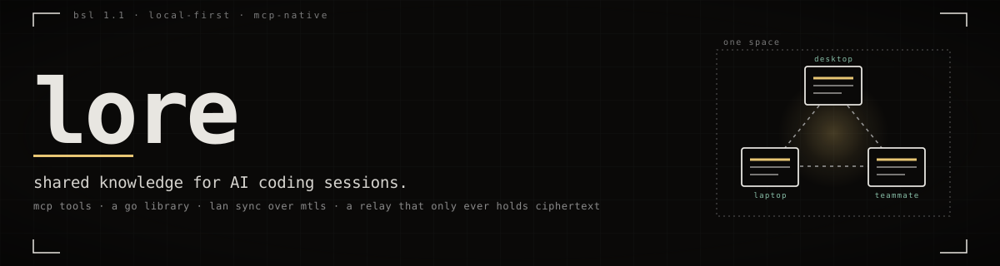

loreWhat one session works out, every later session knows.
lore is a knowledge store. AI coding assistants read and write it through MCP. Go programs embed it directly.
The same knowledge reaches your other machines, and the teammates you invite. Nothing leaves your own devices unless you put it in a shared space.
Local-first. Every read and every write hits the local store; sync happens behind it.
// 00the gap it fills
Every AI session starts from zero.
Session-retrospective systems already fix part of this. A session distils what it learned into markdown, and the next session reads it on startup.
Those files sit in one home directory on one machine. Switch computers and the knowledge stays behind. A teammate’s agent never sees it at all.
// 01two kinds of lore
One space is yours alone. The rest are invite-based.
Every entry lives in exactly one space, and the space decides who can read it.
-
Personal
From you, for you. Created at
lore init, and there is only ever one.Your profile, preferences, craft standards, operational habits, learnings that follow you from project to project.
Nobody else can be added to it. The user-model layers,
profile/andfeedback/, can never leave it — the store refuses to copy them out. Other personal entries can be copied to a shared space one at a time, after you have read the full text. -
Shared
Project spaces bound to a repo, topic spaces bound to nothing.
A project space holds what is true about one codebase: decisions, constraints, gotchas, conclusions that turned out to be wrong. A topic space holds knowledge around a subject instead —
godot-tips,ble-security.Membership is a signed document. Owners and writers can author into the space; readers cannot. Every entry carries the signature of the device that wrote it, and a peer verifies that signature against the member list before applying anything.
When a session distils what it learned, each entry is routed by subject. About you goes to personal. About the codebase goes to that project’s space. Ambiguous goes to personal, which is the safe side.
// 02three tiers of sync
Three ways for the same entry to reach your other machines.
No tier is required. Two stores that never find each other still work; they just hold different knowledge.
- direct, mutual TLS
- through the relay
| Tier | Finds peers by | Carries knowledge over |
|---|---|---|
| Same machine, same LAN | mDNS, _lore._tcp |
direct mutual TLS |
| Your devices anywhere | a static address, lore peer add |
direct mutual TLS over a VPN you already run |
| Anywhere at all | the relay | HTTPS to the relay, which holds ciphertext |
lore serve binds loopback and advertises to this machine only.
--lan is how you opt in to the local network.
// 03the relay
It holds everything, and can read none of it.
Tier three exists so two of your devices can sync when they share no network. It is a
second binary in this repository, lore-relay, and you run it on your own box.
There is no service to sign up for.
- Deltas are encrypted before they are uploaded. XChaCha20-Poly1305 under the space key, which no relay ever receives.
- Entries are signed before they are encrypted. A receiving device verifies the author against the space’s signed member list, so a relay cannot forge knowledge into a space.
- Space identifiers on the wire are blinded. What travels is HMAC-SHA256 under the space key, not the real id — so two accounts holding unrelated spaces cannot be correlated by the thing in the middle.
- Authentication is a signature challenge on the device key. A single-use nonce, signed over the method, the path and a hash of the body. No passwords, no bearer tokens sitting at rest.
A relay operator sees public keys, blob sizes and timing. Delaying or dropping a delta is available to them, and shows up on the other side as a gap in a version vector. Reading, changing or injecting knowledge is not.
// 04mcp
Six tools, and nothing injected per turn.
lore mcp is a stdio MCP server. Claude Code, Cursor, Codex CLI and
Antigravity all speak to it the same way.
| Tool | What it does |
|---|---|
| lore_search | Full-text search over the spaces this machine can read. The default scope is personal, the current directory’s project space, and any space you pinned. Filters for domain, marker and confidence. |
| lore_get | Fetch one entry by id, or every live entry in a domain. |
| lore_put | Store a learning. With no space given it is routed by subject, and ambiguous means personal. |
| lore_delete | Write a signed tombstone. The entry stops appearing here and on every synced device. |
| lore_spaces | List the spaces, with kind, member count and entry count. |
| lore_share | Copy an entry into another space. The first call returns the full text for review; the copy happens on the second. |
The server adds nothing to a session’s context on its own. Knowledge arrives when the agent calls a tool, and not before.
If you already keep a markdown knowledge directory, an opt-in mirror renders the personal space back out to it and imports edits made there.
// 05go library
Or import it, and skip the binary entirely.
The module root is a Go package. Open a home, make spaces, write entries, search them, and run the sync daemon in your own process.
import "github.com/BlueHeisenberg/lore"
// Make the home once. ErrAlreadyInitialised if it is not empty.
lore.Init("/var/lib/app/lore", "app-pod")
st, err := lore.Open(lore.Options{Home: "/var/lib/app/lore"})
defer st.Close()
sp, err := st.CreateSpace(ctx, "household", lore.Shared)
hits, err := st.Search(ctx, "canary deploy", lore.SearchOpts{
Spaces: []string{sp.ID},
})
// Admit a second store you also own into that space.
id, err := memberStore.PublicIdentity()
grant, err := st.GrantMembership(ctx, sp.ID, id, lore.Writer)
_, err = memberStore.AcceptMembership(ctx, grant)
// Sync in this process. No lore binary involved.
go st.Serve(ctx, lore.ServeOptions{LAN: true})
The root package is the whole compatibility promise. Everything under internal/
— sync, signing, membership, the relay, the schema — is unreachable, and gains no exported
accessor. There is no way to get at the database, a space key, or the signing encoding.
A search hit is the whole entry, with the highlighted snippet beside it. IMPLEMENTATION.md has the surface and the error contract.
// 06install
Build it, initialise it, point a harness at it.
lore init generates the account keypair and this device’s key, creates
the personal space, and prints a recovery code once. No email, no username, no server —
the account is the keypair.
$ go install github.com/BlueHeisenberg/lore/cmd/lore@latest
$ lore init # account, device, personal space
$ lore serve --lan # sync daemon; drop --lan to stay on loopback
$ lore status # identity and store summary{
"mcpServers": {
"lore": { "command": "lore", "args": ["mcp"] }
}
}
Then the shared side, when you want it: lore project init binds a space to the
repo you are standing in, lore space create makes a topic space, and
lore space invite hands someone a code to join with.